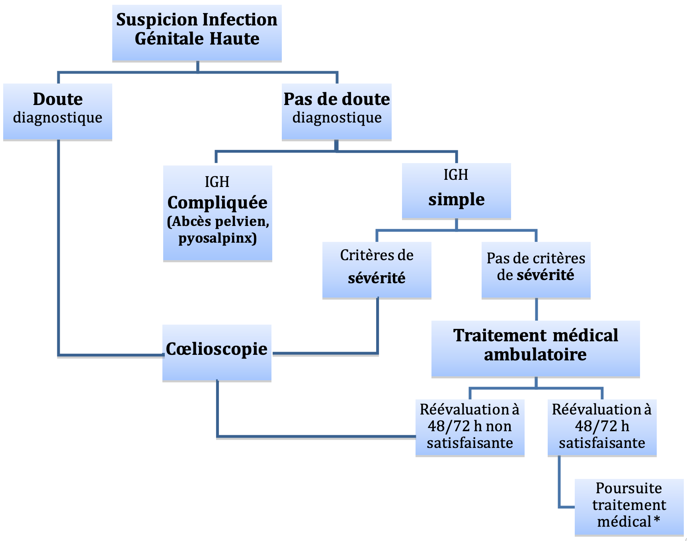
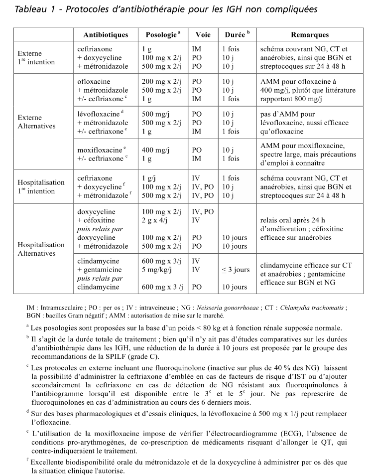
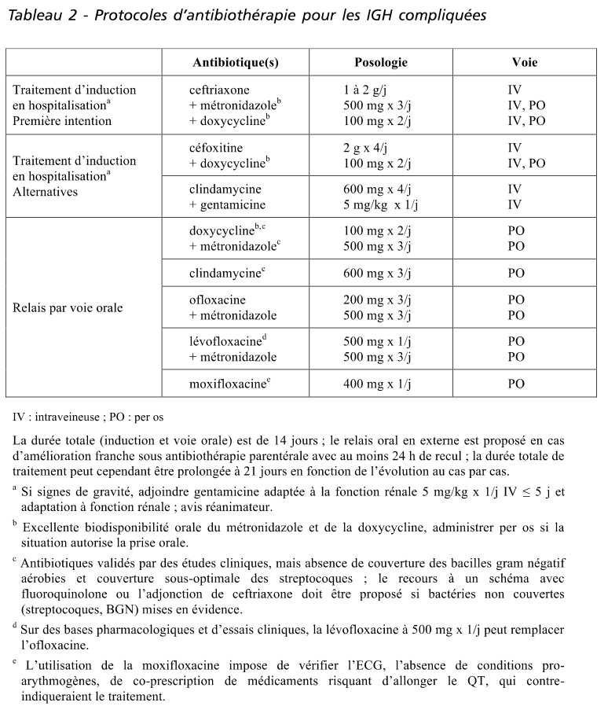

Diminuer les risques séquellaires d’infertilité tubaire, de grossesses extra-utérines et de douleurs pelviennes chroniques.
Pour mémoire 2/3 des infections génitales hautes sont asymptomatiques.
cliniques = signes de pelvipéritonite
échographiques = abcès pelvien et/ou pyosalpinx
NFS CRP (l’absence de syndrome inflammatoire biologique n’élimine pas le diagnostic)
hCG plasmatiques
Bandelette urinaire +/- ECBU
Bilan infections sexuellement transmissibles (VIH, hépatite, syphilis)
Bilan préopératoire selon attitude thérapeutique choisie.
Endocol
Sur milieu spécifique germes intracellulaires en vue PCR + recherche gonocoque
Ablation et mise en culture d’un éventuel dispositif intra-utérin
Suspicion pelvipéritonite
Hyperthermie supérieure à 39 °C
Défense
Récidive avec désir de grossesse

Adapter le traitement antibiotique dès réception des résultats bactériologiques. Noter que l’association Ofloxacine + Métronidazole n’est efficace que dans 50 % des cas sur le gonocoque. Une injection de Ceftriaxone est donc indispensable en cas de recherche positive pour le gonocoque
Antibiothérapie, durée 10 jours (peut être prolongée selon évolution clinique)
En première intention
Ceftriaxone 1g IM 1 fois, Doxycycline 100 mg x 2 / j per os et Métronidazole 500 mg x 2 / j per os
Alternative : Ofloxacine 200 mg x 2 per os + Métronidazole 500 mg x 2 / j per os
Traitement partenaire(s)
Anti-inflammatoires non stéroïdiens pendant les 5 premiers jours en dehors de contre-indication
Hospitalisation
Chirurgie d’emblée ou traitement médical premier puis cœlioscopie après 36-48 h
Antibiothérapie parentérale
Métronidazole 1,5 g / j + doxycycline 200 mg / j + Ceftriaxone 1 g à 2 g
Selon gravité clinique +/- Gentamicine (2 mg/kg dose de charge puis 4,5mg/kg par jour)
Relai per os selon amélioration clinique et après 48 h apyrexie
En première intention Ofloxacine + Métronidazole (cf. supra)
À adapter aux résultats bactériologiques
Durée 14 à 21 jours, selon évolution clinique et biologique (CRP)
Rappel : toutes les patientes sont revues 48 à 72 h après l’instauration du traitement antibiotique ambulatoire par l’interne des urgences pour évaluation de l’efficacité du traitement (clinique, biologique et échographique). Si évolution non satisfaisante, cœlioscopie.
Toutes les patientes doivent être revues en consultation 3 à 4 semaines après l’épisode infectieux initial par le sénior d’astreinte le jour de la réévaluation ou par le sénior auprès duquel un avis a été sollicité.
En cas de désir de grossesse après une infection génitale haute compliquée une cœlioscopie de second look doit être proposée 6 à 8 semaines après l’épisode infectieux
Ross J et al. European Guideline for the management of pelvic inflammatory disease. Int J STD AIDS 2007 ; 18 : 662-6.
Centers for diseases Control and Prevention. Sexually transmitted diseases treatment guidelines, 2006. MMWR 2006 ; 55(RR-6) : 1-94.
Judlin PG et al. Physiopathologie, diagnostic et prise en charge des infections geÃÅnitales hautes. Gynecol Obstet Fertil 2009 ; 37 : 172-182.
RPC CnGOF 2018

